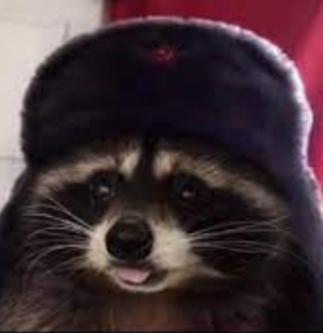
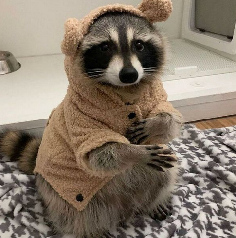
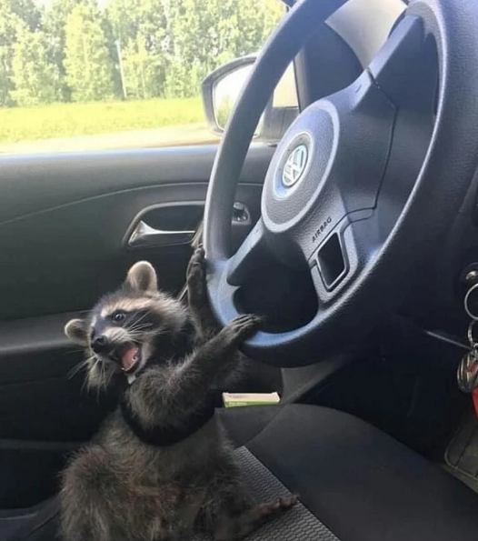
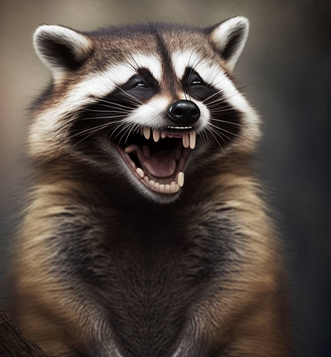

Parabens
Você se parece muito com o Comrade Ivan, uma figura lendária que personifica o espírito revolucionário. Dizem que ele foi batizado na vodka desde o seu nascimento, tornando-se um símbolo de coragem e determinação. Ivan está sempre em busca incansável da revolução, lutando por melhorias na vida não apenas para si mesmo, mas também para seus companheiros de luta. Sua devoção inabalável inspira outros a seguirem o mesmo caminho, unidos em prol de um futuro melhor. Ivan é uma encarnação viva do ideal revolucionário e continua a ser uma figura icônica, pronta para enfrentar todos os desafios com bravura e resiliência.

Você se parece muito com a Princessa, uma guaxinim como qualquer outra, que adora desfrutar dos seus fins de semana aconchegada em casa, mergulhando em maratonas de filmes e séries, enquanto saboreia suas comidas favoritas. Além disso, ela não nega a sua natureza de guaxinim e compartilhar suas opiniões sobre as pessoas ao seu redor,as vezes ate de forma maldosa.

Conheçam Roy, um guaxinim adorável e travesso que se aventurou além das fronteiras de sua floresta e acabou se perdendo. Com sua natureza curiosa e brincalhona, Roy transforma cada momento em uma nova oportunidade de diversão e descoberta.

LiLBigMc é um guaxinim que espalha alegria por onde passa com seu riso peculiar. Seu riso frouxo é capaz de contagiar até mesmo os corações mais desanimados, transformando qualquer ambiente em um lugar repleto de risadas e diversão. Além de seu riso cativante, LiLBigMc tem um talento especial para fofocar. Ele adora estar a par dos últimos acontecimentos e não consegue resistir em compartilhar as notícias mais interessantes com seus amigos